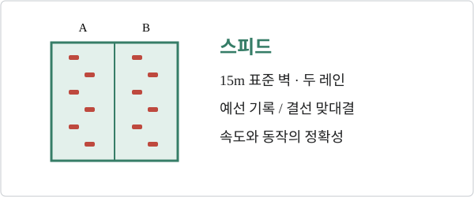

리드

LA28에서는 리드·볼더·스피드가 각각 독립 종목으로 열리며, 남녀 6개 종목에 메달이 걸린다. 아래에서 종목을 선택하면 경기 방식, 국제대회 성적, 올림픽 예선을 같은 순서로 살펴볼 수 있다.


| 대회 · 날짜 | 남자 리드 | 여자 리드 | 남자 볼더 | 여자 볼더 | 남자 스피드 | 여자 스피드 |
|---|---|---|---|---|---|---|
| 2025 시즌 최종 순위시즌 TOP 10 | ESPGINÉS LÓPEZ1JPNANRAKU2JPNYOSHIDA3JPNSUZUKI4KORLEE5GERFLOHÉ6ITASCHENK7GBRROBERTS8FRABERTONE9JPNOMATA10 | GBRMCNEICE1KORSEO2ITAROGORA3USASANDERS4SLOREKAR5BELDOUMONT6SLOGARNBRET7KORKIM8SLOKRAMPL9FRAHILY10 | JPNANRAKU1FRASCHALCK2JPNAMAGASA3KORLEE4BELVAN DUYSEN5FRAJENFT6JPNNARASAKI7SLOPEHARC8JPNNARASAKI9CHNPAN10 | FRABERTONE1JPNNAKAMURA2USASANDERS3JPNSEKIKAWA4JPNMATSUFUJI5GBRMCNEICE6JPNNONAKA7ITAMORONI8FRACALLIET9FRAAVEZOU10 | INAKATIBIN1USAWATSON2JPNOMASA3CHNLONG4CHNCHU5USAHAMMER6KAZMAIMURATOV7INANURSAMSA8GERCARMANNS9UKRTKACH10 | USAHUNT1CHNZHOU2INADEWI3POLMIROSLAW4KORJEONG5POLKAŁUCKA6CHNZHANG7CHNQIN8CHNDENG9CHNMENG10 |
| 서울 · 2025.09.21–28세계선수권 | KORLEE1JPNYOSHIDA2JPNHOMMA3ESPGINÉS4JPNSUZUKI5FRAAVEZOU6AUTSCHUBERT7ITAPLACCI8 | SLOGARNBRET1SLOREKAR2KORSEO3GBRMCNEICE4USASANDERS5FRAAVEZOU6SLORAKOVEC7AUTOBLASSER8 | JPNANRAKU1FRASCHALCK2KORLEE3JPNNARASAKI4JPNNARASAKI5AUTPOSCH6GERBLOEM7GBRMACDOUGALL8 | SLOGARNBRET1FRABERTONE2USACOSTANZA3GBRMCNEICE4SLOBUCKLEY5GERAPEL6USASANDERS7ISRKEREM8 | CHNLONG1GERCARMANNS2USAHAMMER3 | POLMIROSŁAW1CHNDENG2CHNZHOU3 |
| 성별당 | 리드 | 볼더 | 스피드 |
|---|---|---|---|
| 기본 출전 규모 | 12명 | 12명 | 14명 |
| 2027 직접 예선 합계 | 6장 | 6장 | 6장 |
| 2028 Q-시리즈 | 최소 4장 | 최소 4장 | 최소 6장 |
| 개최국 / 보편성 | 1장 / 1장 | 1장 / 1장 | 1장 / 1장 |
국가별 상한은 성별·종목별 2명이다. 볼더와 리드 양쪽에 선발된 선수는 전체 76명 쿼터에서 한 명으로 계산하므로 두 종목의 실제 출전 규모가 늘어날 수 있다. 스피드는 성별 14명으로 제한된다. 공식 선발 체계
확인일 2026.10.11. 대회별 표는 메달리스트, 시즌 표는 상위 10명이다. 2025 세계선수권은 리드·볼더 결승 순위와 스피드 메달리스트를 수록했다. 한국 선수는 파란색으로 표시한다. 각 선수 줄은 국적 · 성 · 순위 순서이며, 전체 이름은 마우스를 올리면 나온다. 성이 같은 선수의 구별에도 전체 이름을 사용한다. 공동 순위는 원자료대로 표시한다.
2026 시즌 순위는 확보한 자료의 중간 순위이며 확정 최종 순위가 아니다. 이미 열린 대회의 빈 결과는 ‘결과 확인 중’, 앞으로 열릴 대회는 ‘예정’으로 구분했다. 정적 자료이므로 이후 성적은 별도 갱신이 필요하다.